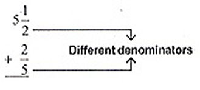
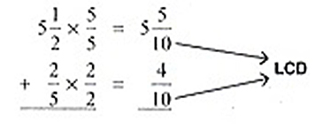
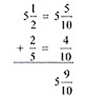
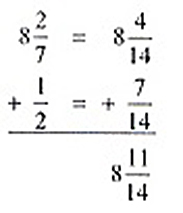
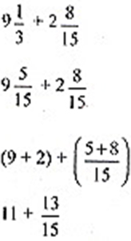

ENGAGE
Mrs. Martin bought 5 1/2 m of white cloth and 2/5m of blue cloth. How many meters of cloth did she buy in all?
EXPLORE
We want to know how many meters of cloth Mrs. Martin bough. To solve for the sum 5 1/2 + 2/5, here are the following steps.
Step 1. Align the fractions and compare the denominators.
Step 2. Find the Least Common Denominator(LCD). Rename the given as similar fraction.
Step 3. Add the fractions. Write the whole number before the fraction sum.
Answer:Mrs. Martin bought 5 9/10m of cloth in all.
EXPLAIN
In adding similar fractions, the numerators are the only ones being added. The sum must be written above the common denominator. Express the answer in the simplest form as much as possible.
What if the fractions are dissimilar? How to we add dissimilar fractions? Here are the steps needed in adding fractions and mixed numbers.
Adding Fractions and Mixed Number
1. Convert dissimilar fractions into similar fractions.
2. In converting dissimilar fractions to similar fraction, we need to get the LCD.
3. Add the whole numbers and the fractional parts.
4. Simplify whenever possible.
Example 1 Add 8 2/7 + 1/2
|  | Align the fractions. |
Example 2 Add 9 1/3 + 2 8/15
|  | Write the mixed numbers. |
| Answer: 11 13/15 | |
Application and Problem Solving
Samantha prepared orange juice. She mixed 1/4 liter of powdered juice and 1 1/2 liters of water. What is the total number of liters of liquid that she mixed?